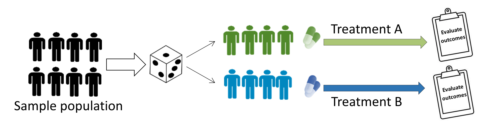
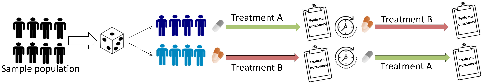
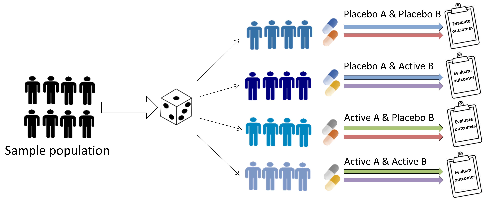
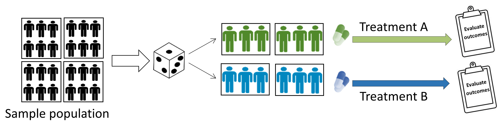
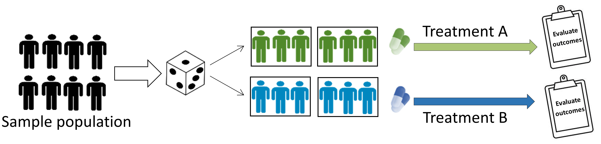
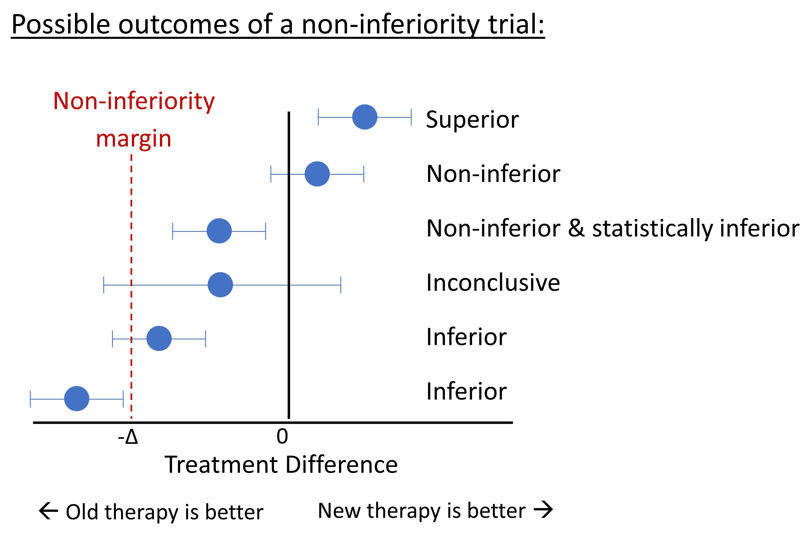

Clinical Trials 1: Study Design
Topic: Introduction to basic concepts of clinical trials and their categorization.
For more information on clinical trials, I recommend the book Statistical Issues in Drug Development by Dr. Senn.
Introduction
The National Institutes of Health (NIH) defines clinical trials as research studies in which \(\geq\) 1 human participant(s) are prospectively assigned to \(\geq\) 1 intervention(s) to evaluate the effects of the intervention(s) on health-related biomedical or behavioral outcomes. Clinical trials aim to isolate the effect of the treatment on the study outcome and provide results that are free of bias. A number of design features are used to achieve this goal, such as:
Randomization - patients are assigned to a treatment group by random selection.
Allocation concealment - personnel are unable to predict the next group assignment.
Blinding - study personnel and patients are deliberately kept unaware of group assignment.
When designing a clinical trial, a detailed study protocol should be created and made publicly available (e.g., at https://clinicaltrials.gov). The NIH has developed protocol templates that may assist in considering all aspects of the trial: https://osp.od.nih.gov/clinical-research/clinical-trials/. The CONSORT guidelines should be followed when reporting results: http://consort-statement.org. Lastly, and importantly, clinical trials should be ethically designed such that patients are not denied the benefit of standard treatment.
Phases of Clinical Trials
Clinical trials involving pharmaceutical products are commonly categorized into four phases:
Phase I: Non-randomized study; test drug in healthy volunteers (15 - 30 volunteers); aim to evaluate the pharmacokinetics/pharmacodynamics of the drug and establish safety and toxicity limits.
Phase II: Randomized or non-randomized; test drug in patients with the disease (<100 volunteers); ‘proof of principle’ stage and aim to evaluate dose-response relationship.
Phase III: Randomized study; test drug against placebo (100s - 1000s of volunteers). Drug tested in a controlled fashion against a placebo or standard therapy.
Phase IV: Non-randomized surveillance study; test drug while in the marketplace; important to gather additional safety information from a larger group of patients, over the long-term.
Trial Design
Parallel-group trial
Patients randomized to treatment group and followed simultaneously to determine the effect of each treatment.

Crossover trial
Patients receive a sequence of different treatments. Each person serves as their own control. There must be a sufficient time gap (‘washout period’) between different treatment phases.

Factorial trials
Evaluate the effect of more than one treatment. Allows assessment of potential interaction among the treatments.

Cluster Randomized Trials
Intact groups (i.e. clusters) are randomized to different interventions, and outcomes are typically measured on individuals within those clusters. Clustered trials are discussed in further detail below. - Example: randomizing of the entire community or hospital to different interventions.

Individually-randomized group treatment trials
This is a type of clustered trial, whereby individuals are individually randomized to different interventions, with groups (i.e. clusters) formed after randomization, and outcomes are typically measured on individuals within those clusters. Clustered trials are discussed in further detail below. - Example: psychological intervention that is delivered in a group setting.

Superiority, Equivalence, Non-inferiority Trials
Superiority trial: aims to show a new treatment is more effective than the comparative treatment.
Superiority is not always the aim. New treatments may be desirable even when they do not have a superior treatment effect - e.g. have fewer side effects or are safer, cheaper, or more convenient. In such cases, equivalence or non-inferiority trials may be a better option.
Equivalence trial: aim to show there is no difference between treatments; i.e., that the new treatment is not worse (inferior) or better (superior) relative to the comparative treatment.
Non-inferiority trial: aim to show that the effect of the new treatment is not clinically worse than the comparative treatment (i.e. not inferior to comparative treatment).
Equivalence and non-inferiority trials require that the investigator predefine the difference between two treatments that is considered clinically important (this difference is often labeled $\Delta$). The focus is on clinically meaningful differences (an effect that is statistically significant may not be clinically meaningful; e.g. a difference of 2 mm Hg in systolic blood pressure between groups may be statistically significant but is not clinically meaningful).
Two treatments are said to be ‘equivalent’ when the confidence interval (CI) of the difference score between treatments is within (i.e. does not exceed) the -\(\\Delta\$ and +\)\Delta$. Non-inferiority trials are one-sided and only evaluate whether the CI exceeds -$\Delta$; if the lower bound is above the margin, the new treatment is deemed non-inferior and the trial is a ‘success’.

For a review of the methods used to define the non-inferiority margin ( \(\Delta\) ), see Althunian et al. 2017
Clustered Trials
Why Are Clustered Trials Used
Clustered trials may be the best option when investigators want to evaluate an intervention that 1) operates at a group level, 2) manipulates the social or physical environment, 3) when interventions are delivered in groups, 4) cannot be delivered to individuals without ‘contamination’ (e.g. ‘spill-over’ effects). For example, a trial evaluating patient outcomes following an educational program for clinicians must use a clustered trial design, whereby clinicians (i.e. the cluster) are randomized, as opposed to randomizing patients. This is because of ‘spill-over’ effects, in that clinicians will utilize the materials learned for all patients; they cannot “use” the materials learned for some patients, and not others.
Due to the challenges outlined below, clustered trials should be avoided unless individually randomized trials are scientifically inferior or practically impossible.
Statistical Challenges of Clustered Trials
A common assumption of standard statistical methods is that observations (e.g. patients) are independent. This assumption is violated in clustered trials since individuals within a cluster are more likely to have similar outcomes. This creates special methodological challenges in design and analysis. Therefore, application of standard statistical methods are not appropriate and will generally bias p-values downwards; that is, could lead to spurious statistical significance (Type I error).
Multilevel models are used for analyses to allow individual and group characteristics to be taken into account. It would be a mistake to ignore clustering effects simply because the observed ICC is close to zero or on the basis of significance tests. Clustering should be accounted for if it was part of the study design.
Special sample size formula are available for clustered trials as a result of the challenges outlined above; the STATA clsampsi command may helpful, though working with a statistician is advisable. The statistical power of clustered trials may be substantially lower compared to a similarly-sized non-clustered trial, i.e. clustering makes it harder to detect differences between groups. It is harder to detect differences when the ‘design effect’ is higher.
The ‘design effect’, is given by: 1 + \(\rho\) (m - 1),
where m = average cluster size (e.g. group size), and
\(\rho\) = intra-cluster correlation (ICC), the correlation among participants within a cluster. The ICC is also interpretable as the proportion of overall variation in the outcome that can be attributable to clusters.
The design effect is small when the group and ICC is small. Generally, increasing the number of clusters offers more increase in power than increasing the number of individuals per cluster. The extant literature on your target population and intervention should be used to estimate your ICC. The ICC tends to be larger for knowledge and attitudes, smaller for behaviors, and even smaller for physiologic measures. As a very general guide, for health related outcomes the ICC values may be (Murray 2016): - 0.00 - 0.05 for large aggregates (such as hospitals, schools, worksites) - 0.05 - 0.25 for small aggregates (such as departments, classrooms) - 0.25 - 0.75 for very small aggregates (such as families, spouse pairs)
Other Considerations for Clustered Trials
Methodological Considerations. Recruitment bias in recruiting individuals within a cluster; that is, clusters (e.g. hospitals) randomized to the new (exciting), treatment may be more eager to recruit individual patients, relative to the cluster randomized to the usual, control treatment.
Ethical considerations. If the intervention is offered at the cluster level, it is typically not possible to obtain consent before its administration (e.g., media campaigns designed to prevent drunk driving). “The roles of the guardians of the patients’ interests during the trial, the gatekeepers of access to patient groups, and sponsors of the research are even more important in cluster randomized trials where individuals may not have the opportunity to give informed consent to participation.” (MRC 2002). Norms regarding the need to obtain informed consent have yet to receive full acceptance.
Reporting. Reporting guidelines for clustered trials are available and should be followed (Campbell 2004). Principle additions include rational for adopting a cluster design, specifying how effects of clustering were incorporated into the sample size calculation and analysis, and an updated flow chart diagram.
References and Further Readings
Althunian TA, et al. Methods of defining the non-inferiority margin in randomized, double-blind controlled trials: a systematic review. Trials. 2017;18(1):107.
Campbell MK, Elbourne DR, Altman DG for the CONSORT Group. CONSORT statement: extension to cluster randomised trials. BMJ 2004; 328:702-708.
Donner A, Klar N. Design and Analysis of Cluster Randomization Trials in Health Research.
Ewald B. Making sense of equivalence and non-inferiority trials. Australian Prescriber. 2013; 36:170-3. Freedman LM, Furberg DC, DeMets DL. Fundamentals of Clinical Trials 5th Edition; Springer, 2015.
Head SJ, Kaul S, Bogers AJ, Kappetein AP. Non-inferiority study design: lessons to be learned from cardiovascular trials. European heart journal. 2012 May 7;33(11):1318-24.
Medical Research Council [MRC]. Cluster Randomised Trials: Methodological and Ethical Considerations. London, England; 2002.
Murray DM. Pragmatic and Group-Randomized Trials in Public Health and Medicine. National Institutes of Health. 2016. https://prevention.nih.gov/grt